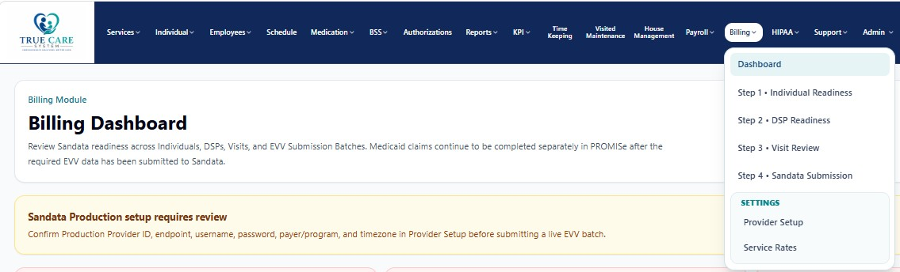

BILLING • EVV OPERATIONS
Billing
Manage Sandata readiness, Provider setup, Client and Employee records, Visit Review, EVV batches, transaction history, and service rates.
Billing and EVV pages may contain PHI, Medicaid identifiers, employee identifiers, service information, visit dates, GPS evidence, claim-supporting data, and submission credentials. Screenshots in this public guide use redacted or demonstration information. Production access must be role-based, Provider-scoped, logged, and limited to the minimum information necessary.
True Care System has implemented the Sandata Alternate EVV workflow for Client, Employee, Visit, Call, correction, batching, transaction tracking, rejection review, and resubmission. The platform has completed the applicable Sandata testing and production-onboarding work for its certified payer program. Sandata certification is program-specific; availability in another state or payer program requires that program's registration, testing, approval, credentials, and current technical specifications.
True Care System sends required EVV data to the Sandata Aggregator. After accepted EVV submission, the Provider completes the Medicaid billing or claim workflow through the applicable state claims system, such as Pennsylvania PROMISe, unless the payer program specifies a different process.
Billing and EVV Management Overview
The Billing module provides a controlled, readiness-first workflow for converting operational service data into Sandata-compliant EVV submissions. It validates the Provider configuration, Individual records, DSP records, authorizations, service codes, visits, calls, GPS, corrections, units, effective dates, and submission history before data is transmitted.

Billing Workspaces
| Workspace | General Purpose | Documentation |
|---|---|---|
| Billing Dashboard | Review the complete EVV readiness picture, Provider integration status, submission counts, and workflow stages. | Open guide |
| Step 1 · Individual Readiness | Validate Sandata Client information, payer/program, service, address, identifiers, and sequence data. | Open guide |
| Step 2 · DSP Readiness | Validate Sandata Employee identification, mapping, employment information, role, status, and sequence data. | Open guide |
| Step 3 · Visit Review | Review completed visits, calls, GPS, schedule-versus-actual time, units, corrections, and batch eligibility. | Open guide |
| Step 4 · Sandata Submission | Submit EVV batches, track UUIDs and responses, review rejected records, and maintain resubmission history. | Open guide |
| Provider Setup | Configure Provider identifiers, Sandata environment, endpoints, credentials, payer/program, timezone, and activation status. | Open guide |
| Service Rates | Maintain Provider-specific service rates, formats, ratios, levels, zones, payer relationships, and effective dates. | Open guide |
Controlled EVV Workflow
- Configure the Provider.
Confirm Sandata environment, Provider identifier, payer/program, timezone, endpoints, and credentials.
- Validate Individuals.
Resolve missing Client identifiers, addresses, payer information, procedure codes, and sequence requirements.
- Validate DSPs.
Resolve Employee identifier, mapping, role, employment, personal information, and sequence requirements.
- Review Visits.
Confirm schedule, actual calls, GPS, authorization, service, units, corrections, and readiness.
- Create and submit the EVV batch.
Preview the request, submit to the configured environment, and retain the transaction UUID and response.
- Resolve and resubmit.
Correct rejected or invalid records, preserve history, and resubmit without losing the original audit trail.
Marketing and Procurement Positioning
True Care System combines Mobile EVV, scheduling, visit maintenance, authorization control, billing readiness, Sandata integration, payroll, reports, HIPAA audit logging, and multi-tenant Provider isolation in one operational platform. For proposals and investor materials, certification statements should name the applicable Sandata payer program and certification scope rather than imply automatic approval for every state. Additional state programs can be onboarded through Sandata's program-specific Alternate EVV registration and certification process.